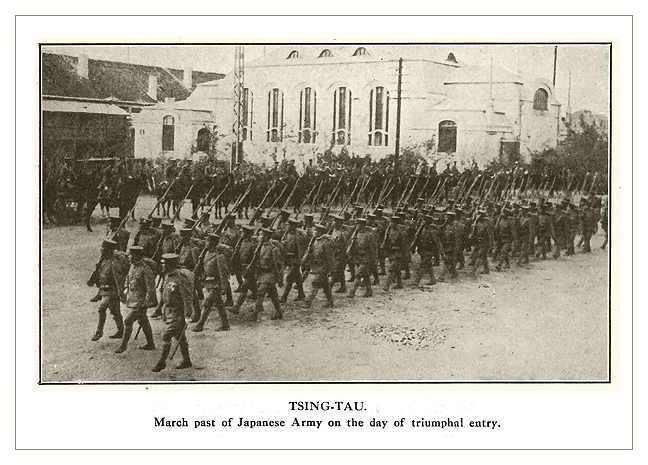
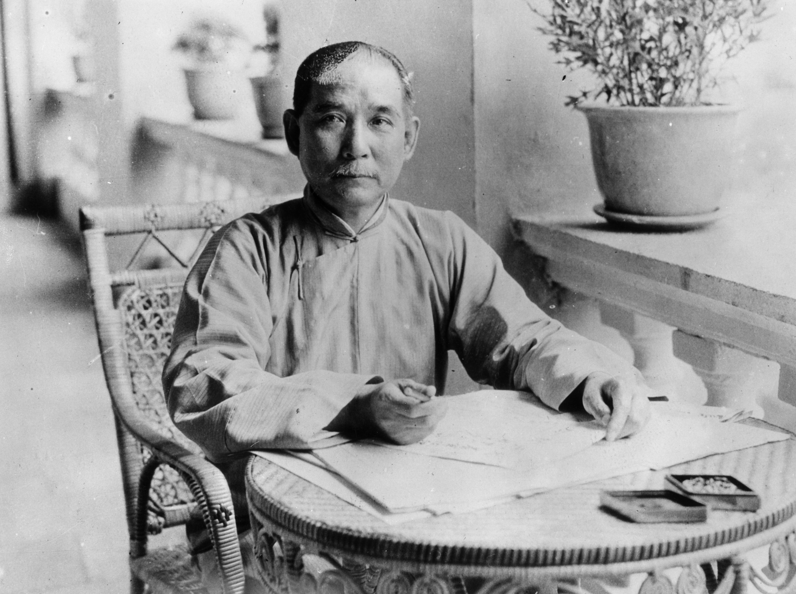

Kekalahan perang dengan Inggris
Peristiwa penenggelaman candu dari Inggris oleh pihak Kekaisaran Cina atas perintah kaisar Lin tse hsu. Pembuangan peti candu oleh armada kekaisaran cina menyulut kemarahan pihak Inggris. Kemarahan dan kerugian pihak dari pihak Inggris membalas dengan menyerang kekaisaran Cina, armada tiongkok pun mengalami kekalahan sehingga harus menandatangani perjanjian nanking pada tahun 1842. Perjanjian tersebut berisi 3 hal yaitu:
- Kekaisaran cina menyerahkan hongkong kepada inggris
- kisaran cina mengganti kerugian akibat perang sebesar 6 juta dolar
- Lima pelapukan di kekaisaran cina terbuka untuk perdagangan asing
- Rakyat Cina mengalami keberatan atas tuntutan pajak yang terlalu tinggi sebagai tindak lanjut kerugian perang
- Berkembangnya anggapan tentang pemerintahan dinasti mancu yang korup dan gagal mengatasi setiap permasalahan
Kalah Perang dengan Jepang
kekalahan kaisar cina dalam perang menghadapi jepang untuk memperebutkan wilayah korea. Kekaisaran cina pada akhirnya harus mengakui kemerdekaan korea serta menyerahkan Taiwan kepada jepang. Serta membayar gaji rugi sebesar 200 juta tael.
Ideoogi Dr Sun Yat Sen
Berkembangnya Paham dari seorang yang paling berpengaruh bernama Dr. Sun Yat Sen dengan ajarannya yang dinamai dengan san min chu I. Asas tersebut terdiri dari tiga hal yaitu min t'sen yang berarti nasionalisme, min tsu yang berarti demokrasi, dan min sheng yang berarti sosialisme. Suatu tujuan pokok dari dr sun Yat sen adalah meninggikan harkat dan martabat bangsa Tionghoa.